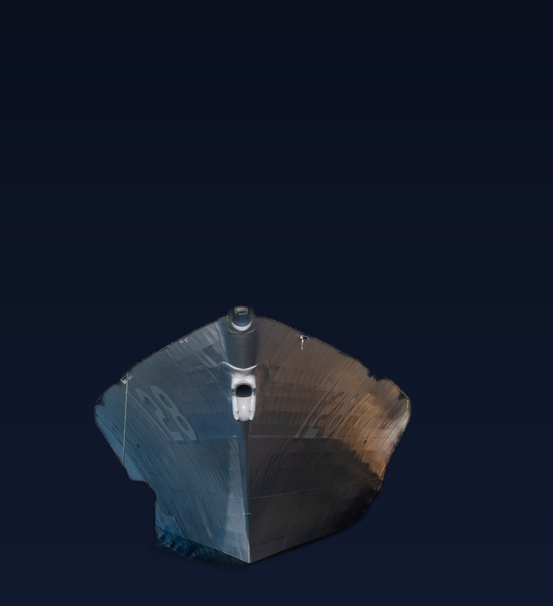
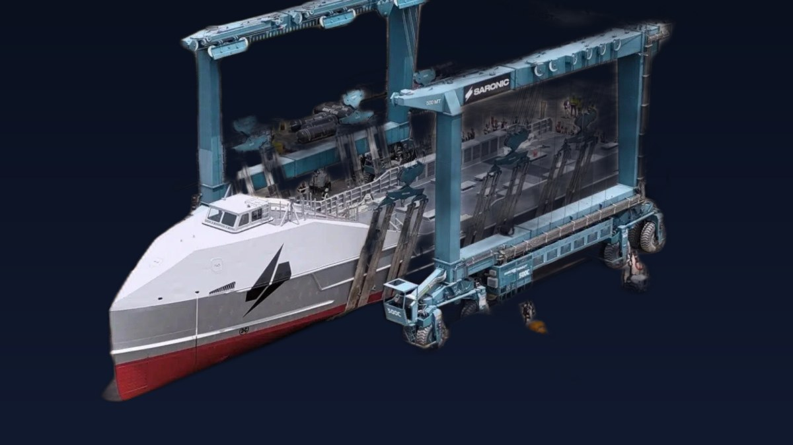

Naval Warfare and Maritime Security
Where the Carriers Are: Bush Takes Liberty in Phuket, Washington Covers Iran
USS George H.W. Bush pulled into Phuket after 188 days at sea, leaving USS George Washington as the sole carrier facing Iran.
USS George H.W. Bush pulled into Phuket after 188 days at sea, leaving USS George Washington as the sole carrier facing Iran.

Anduril Industries and the U.S. Navy are investing a combined $6.6 billion to expand America's submarine industrial base, anchored by a new software-defined shipyard.

The Navy has commissioned its newest destroyer, USS Ted Stevens, into active service during a ceremony in Whittier, Alaska.

Germany is arming its 7,200-ton F125 frigates with IRIS-T SLM surface-to-air missiles, addressing their notoriously light armament.

The U.S. Navy has ordered 30 medium uncrewed surface vessels, a major step toward fielding larger drone ship fleets after years of struggle.

An MV-22B Osprey has dropped sonobuoys in its first lot acceptance test, paving the way for tiltrotor anti-submarine warfare.

After 34 years of service, the carrier USS George Washington has trapped its 200,000th fixed-wing aircraft — a milestone reached in the Indian Ocean.